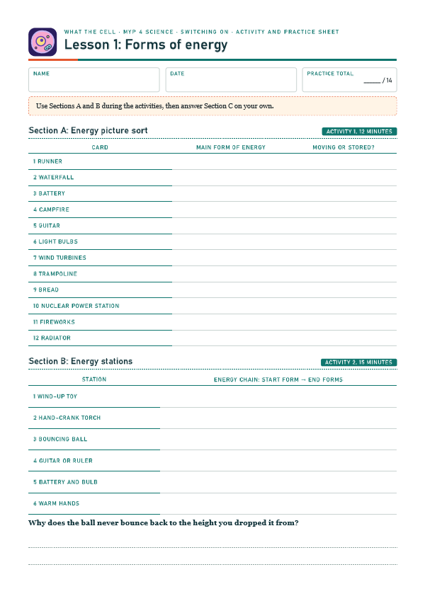

By the end of the lesson you can
- State what energy is and its unit, the joule
- Name the main forms of energy
- Sort forms into moving (kinetic) and stored (potential) energy
- Spot the forms of energy in everyday things
Keys: arrows or a presentation clicker move the slides, F for full screen. Slides with a red dot have a video or simulation.
Videos (all 5 minutes or less)
- 3:40
Energy stores and transfers
Revision Monkey. While you watch: What does the video call the places energy is kept? Slide 14.
Print and practise

Activity and practice sheet
Used in the lesson’s activities, with practice questions. Your teacher has the answers.
Download (PDF)Lesson 1 slides
All 24 slides in one file, to read again or print. The video buttons on the slides open YouTube.
Download the slides (PDF)Revising? The Revision tab on the unit page has the unit notes and review.
Class activity pack
Everything to print for the lesson’s activities: picture cards, sorting mats, station cards with their kit lists, and the teacher’s set-up notes. Print it before class.
Download the activity pack (PDF)Notes: Forms of energy
energy
What is needed to make something happen: move, heat up, light up or make a sound. For example: food gives you energy to run.
joule (J)
The unit we measure energy in. For example: a small apple gives about 400 000 J.
kinetic energy
The energy of anything that is moving. For example: a spinning wind turbine.
potential energy
Stored energy, waiting to be used. For example: water held behind a dam.
chemical energy
Energy stored in food, fuels and batteries. For example: a battery in a torch.
thermal energy
The energy of hot things; heat. For example: a campfire.
energy
What is needed to make something happen: to move, heat up, light up or make a sound. For example: you need energy to climb stairs.
joule (J)
The unit of energy. 1000 J = 1 kilojoule (kJ).. For example: boiling a cup of water takes about 80 000 J.
kinetic
Energy of moving objects. Faster or heavier means more.. For example: wind.
thermal
Energy of hot objects: their particles move faster. For example: fire.
sound
Energy carried by vibrations through air. For example: a guitar string.
light
Energy that travels as light waves. For example: a light bulb.
electrical energy
Energy carried by an electric current through wires. For example: mains electricity from the power station.
gravitational
Stored in anything lifted up high. For example: water behind a dam.
elastic
Stored in anything stretched or squashed. For example: a trampoline, a spring.
chemical
Stored in food, fuels and batteries. For example: rice, petrol.
nuclear
Stored in the centre (nucleus) of atoms. For example: uranium fuel.
Key words
| energy | what is needed to make something happen |
|---|---|
| joule (J) | the unit of energy; 1 kJ = 1000 J |
| kinetic energy | energy of moving things |
| potential energy | stored energy |
| gravitational energy | stored in things lifted up high |
| elastic energy | stored in stretched or squashed things |
| chemical energy | stored in food, fuels and batteries |
| thermal energy | energy of hot things |
| energy chain | start form -> end forms, e.g. chemical -> light + thermal |